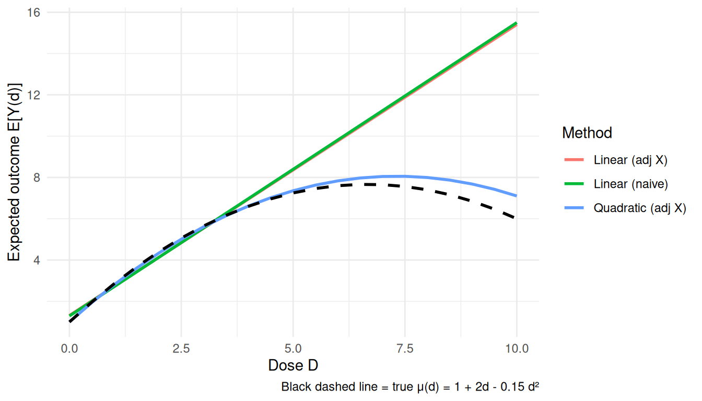
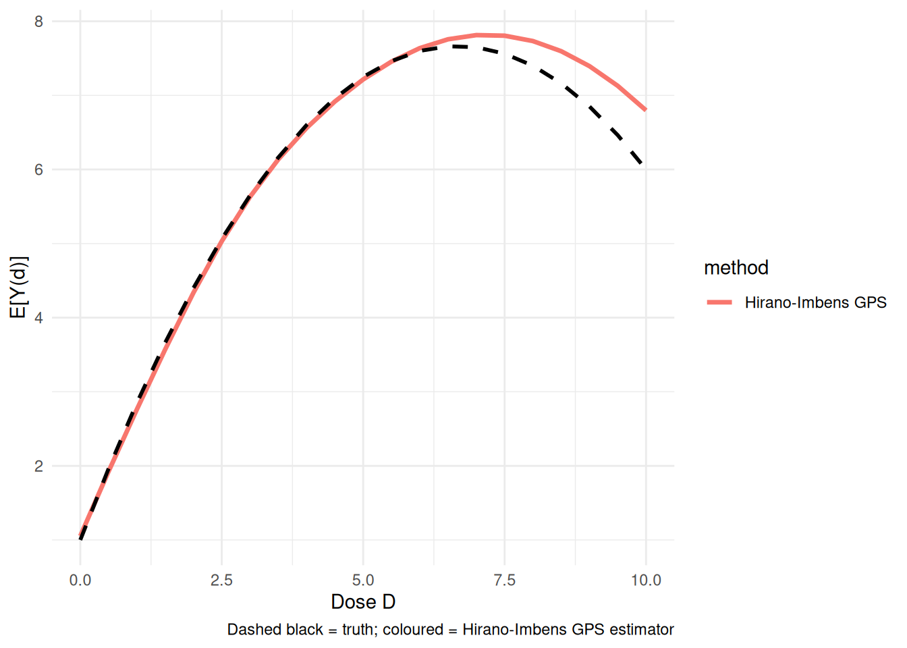
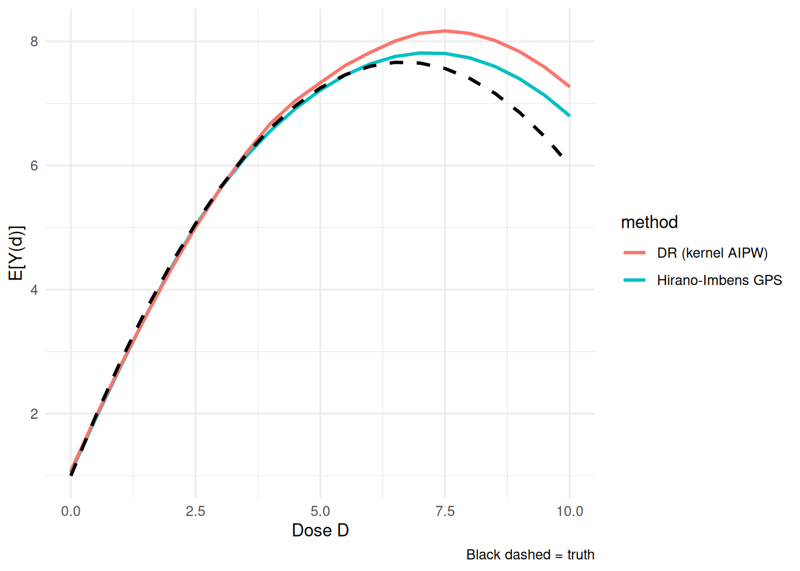

10 Continuous and Multivalued Treatments
So far most examples use a binary treatment. Many treatments are not binary: dose of a drug, hours in a program, dollars spent, or a treatment with several levels. In those cases “the treatment effect” is not one number. We usually want a dose-response curve,
\[ \mu(d) = \mathbb{E}[Y(d)], \quad d \in \mathcal{D}. \tag{10.1}\]
I use three approaches:
- Generalized propensity score (GPS; Hirano-Imbens 2004), which models the conditional density of treatment given covariates.
- Doubly-robust dose-response estimation (in the spirit of Kennedy et al. 2017), which combines a GPS with an outcome model.
- Longitudinal modified treatment policies [LMTP; Dı́az et al. (2023)], which are useful when treatments are time-varying or when fixed treatment levels create positivity problems.
Related reading: The LMTP material below is condensed from the longer treatment in Longitudinal modified treatment policy (LMTP) in Topics on Econometrics and Causal Inference, which follows Nicholas Williams’s tutorials at beyondtheate.com.
10.1 The continuous-treatment setup
Start with a simple simulation. Treatment is a dose, and the dose depends on covariates:
set.seed(42)
n <- 2000
X1 <- rnorm(n)
X2 <- rnorm(n)
# Continuous treatment, depends on X1, X2
D <- 2 + 0.5 * X1 + 0.5 * X2 + rnorm(n, sd = 1.0)
# Dose-response: nonlinear in D
true_mu <- function(d) 1.0 + 2.0 * d - 0.15 * d^2
Y <- true_mu(D) + 0.3 * X1 - 0.3 * X2 + rnorm(n)
df <- tibble(Y = Y, D = D, X1 = X1, X2 = X2)
cat(sprintf("Treatment range: [%.2f, %.2f]\n", min(D), max(D)))Treatment range: [-1.82, 6.39]True μ(d=2) = 4.40, μ(d=4) = 6.60, μ(d=6) = 7.60The true dose-response curve is \(\mu(d) = 1 + 2d - 0.15d^2\): concave, with clearly diminishing returns. It is worth being precise about the shape rather than calling it hump-shaped, because the vertex sits at \(d = 2/0.3 \approx 6.67\), just beyond the largest dose in the sample. Over the observed range the curve is therefore increasing throughout — its slope \(2 - 0.3d\) is still positive (about 0.08) at the maximum observed dose — so the downturn is extrapolation, not something these data identify. The estimation problem is to recover the curvature that is in range when the observed dose is confounded by \(X\).
10.2 Naive regression vs adjusted regression
A linear regression of \(Y\) on \(D\) has two problems: it ignores confounding by \(X\), and it imposes a straight line on a nonlinear dose-response curve.
# Linear fit, ignoring covariates
linear_naive <- lm(Y ~ D, data = df)
# Linear fit with covariate adjustment
linear_adj <- lm(Y ~ D + X1 + X2, data = df)
# Nonlinear fit with covariate adjustment
poly_adj <- lm(Y ~ poly(D, 2) + X1 + X2, data = df)
ds <- seq(0, 10, by = 0.5)
predict_mu <- function(fit, ds) {
data.frame(d = ds, X1 = 0, X2 = 0) |>
rename(D = d) -> nd
predict(fit, newdata = nd)
}
# True dose-response
df_true <- tibble(d = ds, mu = true_mu(ds))
df_fits <- bind_rows(
tibble(d = ds, mu = predict_mu(linear_naive, ds), method = "Linear (naive)"),
tibble(d = ds, mu = predict_mu(linear_adj, ds), method = "Linear (adj X)"),
tibble(d = ds, mu = predict_mu(poly_adj, ds), method = "Quadratic (adj X)")
)ggplot() +
geom_line(data = df_fits, aes(d, mu, colour = method), linewidth = 1.0) +
geom_line(data = df_true, aes(d, mu), colour = "black",
linetype = "dashed", linewidth = 1.0) +
labs(x = "Dose D", y = "Expected outcome E[Y(d)]",
colour = "Method",
caption = "Black dashed line = true μ(d) = 1 + 2d - 0.15 d²") +
theme_minimal()
The quadratic adjusted model is better in this simulation because the true curve is quadratic. In real applications, the functional form is usually not known.
10.3 Generalized propensity score (GPS)
The generalized propensity score is the conditional density of the treatment given covariates:
\[ r(d, x) = f_{D \mid X}(d \mid x). \tag{10.2}\]
Under unconfoundedness, the GPS plays the same role as the propensity score for binary treatment. In practice we often start with a normal model for \(D \mid X\): \(D \mid X \sim \mathcal{N}(\beta_0+\beta'X,\sigma^2)\).
# Fit GPS model: D ~ X with Normal residuals
gps_model <- lm(D ~ X1 + X2, data = df)
d_pred <- predict(gps_model)
sigma_e <- sigma(gps_model)
# GPS for each unit's observed treatment
gps <- dnorm(df$D, mean = d_pred, sd = sigma_e)
df$gps <- gps
# IPW-style weights for continuous treatment: 1 / GPS
# Stabilise by multiplying by the marginal density f_D(D)
# NOTE: sw_cont is computed only as an overlap/positivity diagnostic.
# The Hirano-Imbens estimator below does NOT weight by it: the GPS
# enters as a regressor in the outcome model.
marginal_D <- density(df$D)
fD <- approx(marginal_D$x, marginal_D$y, xout = df$D)$y
df$sw_cont <- pmin(fD / gps, quantile(fD / gps, 0.99))
cat(sprintf("Weight summary: min=%.3f, mean=%.3f, max=%.3f\n",
min(df$sw_cont), mean(df$sw_cont), max(df$sw_cont)))Weight summary: min=0.039, mean=0.947, max=4.390The Hirano-Imbens estimator has two steps. First regress \(Y\) on flexible functions of \(D\) and the estimated GPS. Then, for each dose \(d\), average the predicted outcome over the sample.
# Stage 2: regress Y on flexible function of (D, GPS)
hi_fit <- lm(Y ~ poly(D, 2) + poly(gps, 2) + I(D * gps), data = df)
# Dose-response at each d: average over the empirical distribution of GPS
# at that d.
estimate_dose <- function(d) {
# Predict GPS at this d for each unit
gps_at_d <- dnorm(d, mean = d_pred, sd = sigma_e)
nd <- data.frame(D = d, gps = gps_at_d)
mean(predict(hi_fit, newdata = nd))
}
ds <- seq(0, 10, by = 0.5)
hi_dose <- sapply(ds, estimate_dose)
df_hi <- tibble(d = ds, mu = hi_dose, method = "Hirano-Imbens GPS")
ggplot() +
geom_line(data = df_hi, aes(d, mu, colour = method), linewidth = 1.2) +
geom_line(data = df_true, aes(d, mu), colour = "black",
linetype = "dashed", linewidth = 1.0) +
labs(x = "Dose D", y = "E[Y(d)]",
caption = "Dashed black = truth; coloured = Hirano-Imbens GPS estimator") +
theme_minimal()
In this example the GPS estimator tracks the nonlinear curve much better than the naive linear regression.
10.4 Doubly-robust dose-response estimation
A kernel-localized AIPW estimator — in the spirit of Kennedy et al. (2017), who develop a more elaborate pseudo-outcome version with formal guarantees — is the continuous-treatment analogue of AIPW. It combines:
- An outcome model \(\hat\mu(d, x) = \mathbb{E}[Y \mid D = d, X = x]\)
- A generalised propensity score \(\hat r(d \mid x)\)
Then the dose-response at \(d\) is estimated by
\[ \hat\mu_{DR}(d) = \frac{1}{n} \sum_i \left[ \hat\mu(d, X_i) + K_h(D_i - d) \cdot \frac{Y_i - \hat\mu(D_i, X_i)}{\hat r(D_i \mid X_i)} \right], \tag{10.3}\]
where \(K_h\) is a kernel around dose \(d\). The bandwidth \(h\) controls how much nearby observed doses contribute to the estimate. (The code below uses the weight-normalized — Hájek — version of the correction term, dividing the weights by their mean; the population limit is unchanged.)
Using the GPS already estimated above, the implementation is short:
# Outcome model μ̂(D, X): flexible polynomial
mu_fit <- lm(Y ~ D + I(D^2) + X1 + X2 + I(D * X1) + I(D * X2), data = df)
df$mu_at_obs <- predict(mu_fit)
# DR estimator at dose d with bandwidth h
dr_estimate <- function(d, h = 0.5) {
# Counterfactual prediction at D = d for each unit
mu_at_d <- predict(mu_fit, newdata = transform(df, D = d))
# Kernel weight on observed treatment near d
kernel <- dnorm(df$D - d, sd = h)
weight <- kernel / df$gps
weight <- weight / mean(weight) # normalise
# DR correction
correction <- weight * (df$Y - df$mu_at_obs)
mean(mu_at_d) + mean(correction)
}
ds <- seq(0, 10, by = 0.5)
dr_dose <- sapply(ds, dr_estimate)
df_drf <- tibble(d = ds, mu = dr_dose, method = "DR (kernel AIPW)")
ggplot() +
geom_line(data = df_hi, aes(d, mu, colour = method), linewidth = 1.0) +
geom_line(data = df_drf, aes(d, mu, colour = method), linewidth = 1.0) +
geom_line(data = df_true, aes(d, mu), colour = "black",
linetype = "dashed", linewidth = 1.0) +
labs(x = "Dose D", y = "E[Y(d)]",
caption = "Black dashed = truth") +
theme_minimal()
Read this as an illustrative kernel-AIPW construction rather than a turnkey doubly robust theorem. For continuous treatments, a formal doubly robust dose-response result – consistency if either the outcome model or the GPS is correct – requires additional bandwidth, nuisance-convergence-rate, smoothness, and orthogonalization conditions (see Kennedy et al. on continuous-treatment DR estimators). The self-normalized kernel correction shown here conveys the intuition but does not by itself establish those guarantees. As usual, the bandwidth trades bias against variance.
The causaldrf package provides ready-made versions of these estimators, including hi_est, iptw_est, aipwee_est, gam_est, nw_est, and bart_est.
10.5 Longitudinal Modified Treatment Policies (LMTP)
Fixed-dose interventions can be unrealistic. For example, there may be almost no observations near \(D=10\), so estimating \(Y(10)\) requires extrapolation. LMTP avoids this by defining interventions as changes to the observed treatment, such as “shift everyone’s dose down by one unit.” This keeps the counterfactual treatment closer to the observed support.
10.5.1 A two-period example
L_1 A_1 L_2 A_2 Y
1 0.2655087 0 0.4913989 0 -0.42997401
2 0.3721239 1 -0.3696255 0 -0.76396535
3 0.5728534 0 0.5900039 0 0.79312079
4 0.9082078 1 -0.2434529 1 1.23628221
5 0.2016819 0 0.3198965 0 0.02620015
6 0.8983897 0 0.1336102 1 1.00441306For simplicity the worked example uses static policies (set every treatment to 0, then to 1) on a binary treatment — lmtp handles these in the same framework. A genuinely modified policy on a continuous dose would instead return a shift of the observed value, e.g. function(data, trt) data[[trt]] - 1, which is what keeps the counterfactual on the observed support. Here is the set-to-zero policy:
Then fit the LMTP estimator with lmtp::lmtp_tmle:
# TMLE-based LMTP estimator with super-learners for nuisance functions
# (using SL.glm to keep it fast; in practice use richer SL libraries)
lmtp_fit <- lmtp_tmle(
data = lmtp_data,
trt = c("A_1", "A_2"),
outcome = "Y",
baseline = NULL,
time_vary = list(c("L_1"), c("L_2")),
shift = shift_zero,
outcome_type = "continuous",
learners_outcome = c("SL.glm"),
learners_trt = c("SL.glm"),
folds = 2
)
# tidy() gives the estimate, SE, and CI as a data frame
# (the styled console print does not render cleanly in the book)
tidy(lmtp_fit)# A tibble: 1 × 4
estimate std.error conf.low conf.high
<dbl> <dbl> <dbl> <dbl>
1 0.118 0.0252 0.0681 0.167The useful part of lmtp is that it handles the time-ordering of covariates, treatments, and outcomes. The output gives the TMLE estimate with its standard error and confidence interval.
10.5.2 Contrasts between policies
We can also compare two policies, such as “set to 0” versus “set to 1”:
shift_one <- function(data, trt) {
a <- data[[trt]]
rep(1, length(a))
}
lmtp_one <- lmtp_tmle(
data = lmtp_data,
trt = c("A_1", "A_2"),
outcome = "Y",
baseline = NULL,
time_vary = list(c("L_1"), c("L_2")),
shift = shift_one,
outcome_type = "continuous",
learners_outcome = c("SL.glm"),
learners_trt = c("SL.glm"),
folds = 2
)
contrast <- lmtp_contrast(lmtp_one, ref = lmtp_fit)
as.data.frame(contrast$estimates) shift ref estimate std.error conf.low conf.high p.value
1 1.103091 0.1176079 0.9854826 0.03489166 0.9170962 1.053869 1.683133e-175The contrast is the difference between the two policy-specific mean outcomes.
10.6 Choosing among the three
| Method | Strengths | Weaknesses |
|---|---|---|
| GPS (Hirano-Imbens) | Conceptually transparent; widely understood | Parametric assumptions on the GPS and the outcome-GPS regression; sensitive to their misspecification |
| Doubly-robust (kernel AIPW) | Robust to misspecification of one nuisance; attains nonparametric oracle rates | More complex; nuisance models need careful tuning; sensitive to bandwidth |
| LMTP | Handles continuous + multivalued + time-varying uniformly; respects positivity | More setup; requires defining a shift function |
In practice:
- For a simple cross-sectional continuous treatment with good overlap, GPS or the Kennedy DR estimator is a natural start.
- For time-varying treatments or policy shifts, use LMTP.
- For multivalued treatments, use a multinomial propensity model and the same adjustment logic.
10.7 When to use these methods
These methods are useful when:
- Treatment has more than two values.
- The research question is about the shape of the dose-response curve.
- The intervention is better described as shifting treatment than setting treatment to a fixed value.
For strictly binary, single-time-period problems, the standard Estimation and Heterogeneous Effects methods are sufficient.
10.8 Summary
- Continuous and multivalued treatments usually require a dose-response curve, not a single coefficient.
- GPS extends propensity-score logic to continuous treatments by modeling the density of treatment given covariates.
- Kennedy’s DR estimator adds an outcome model to the GPS.
- LMTP is useful when the intervention is a policy shift or when treatment is time-varying.